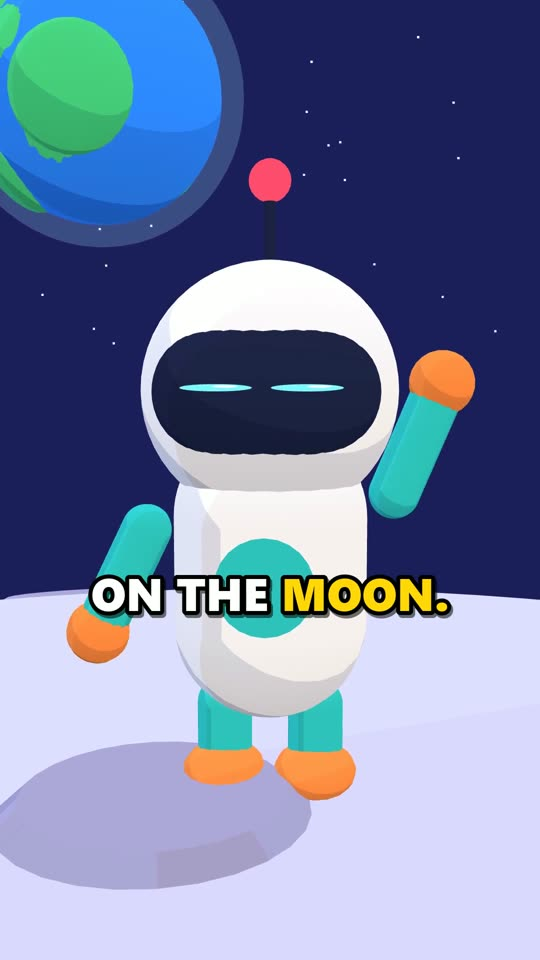
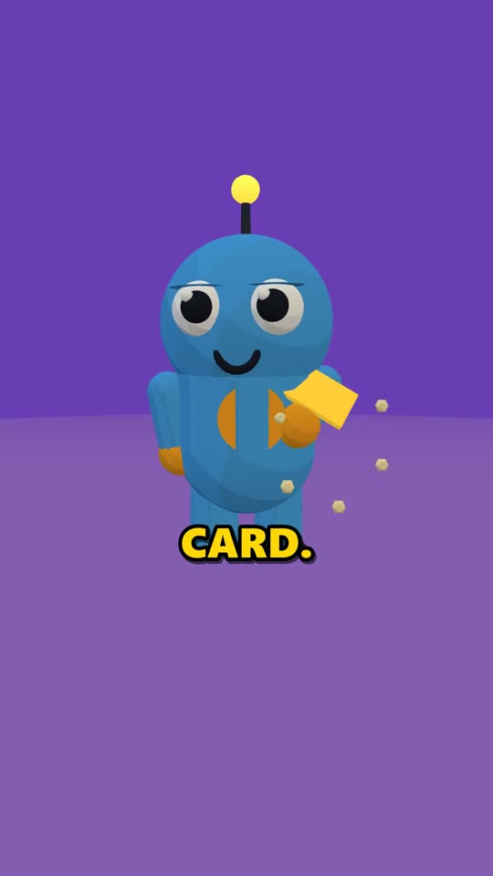
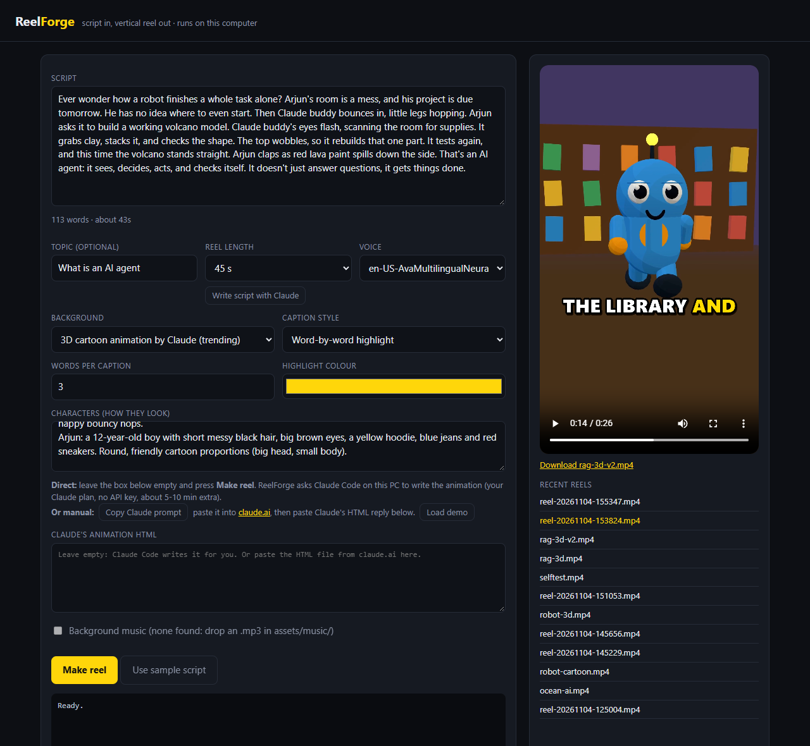

Claude writes the script and builds the animation as code. ReelForge gives every character a voice, times captions to each spoken word, records the 3D scene frame by frame and hands you a finished 1080x1920 MP4 under 90 seconds.
Watch the demosView on GitHubUnedited outputs. Voices are free Microsoft neural voices, captions are timed by Whisper, the 3D scenes are Three.js code. Tap a video for sound.
These are the actual HTML files ReelForge records. They play live in your browser (with placeholder timing, no voice). ReelForge calls their renderFrame(t) 30 times per second of video to record them in sync with the voiceover.


Everything runs on your computer. Claude is reached through Claude Code on your own plan, so there is no API key in the project.
Type a topic. Claude Code writes a hook-first script, as narration or as a mini movie where the characters talk.
Free edge-tts neural voices. In a mini movie each speaker gets their own voice: a cute one for the mascot, a younger one for the kid.
faster-whisper listens to the voiceover locally and finds when every word is spoken. Captions keep your exact spelling.
Claude storyboards each line (set, props, shot, emotion) and writes one Three.js file. It is told who speaks each word, so talking characters can move their mouths.
Headless Edge or Chrome renders renderFrame(t) for every frame on your GPU, so the picture stays in sync with the voice.
FFmpeg adds word-by-word captions (one colour per speaker), mixes music that dips under the voice, and writes a 9:16 MP4.
Write lines as NAME: text and ReelForge casts a voice for each character, colours their captions and tells the animation who is talking when.
Excerpt of samples/agent-movie.txt, written by Claude Code.
git clone https://github.com/Omkar210404/Reel-Forge cd Reel-Forge python -m venv .venv && .venv\Scripts\activate pip install -r requirements.txt && pip install -e . reelforge selftest # checks every stage reelforge ui # http://127.0.0.1:8770
Needs Python 3.11+, FFmpeg and Edge or Chrome. For Claude: npm install -g @anthropic-ai/claude-code, then run claude once to log in. Full steps are in the README.
A small dark web app on 127.0.0.1: write or paste a script, describe your characters, press Make reel.
